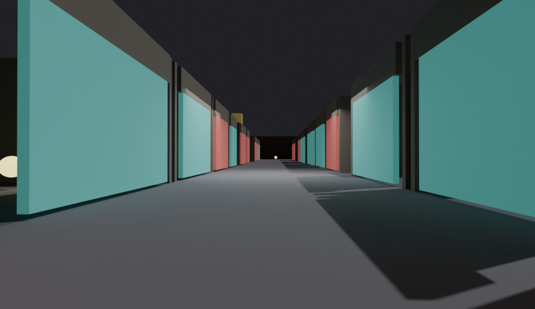
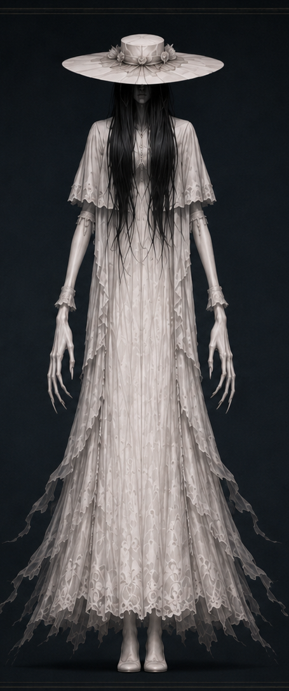
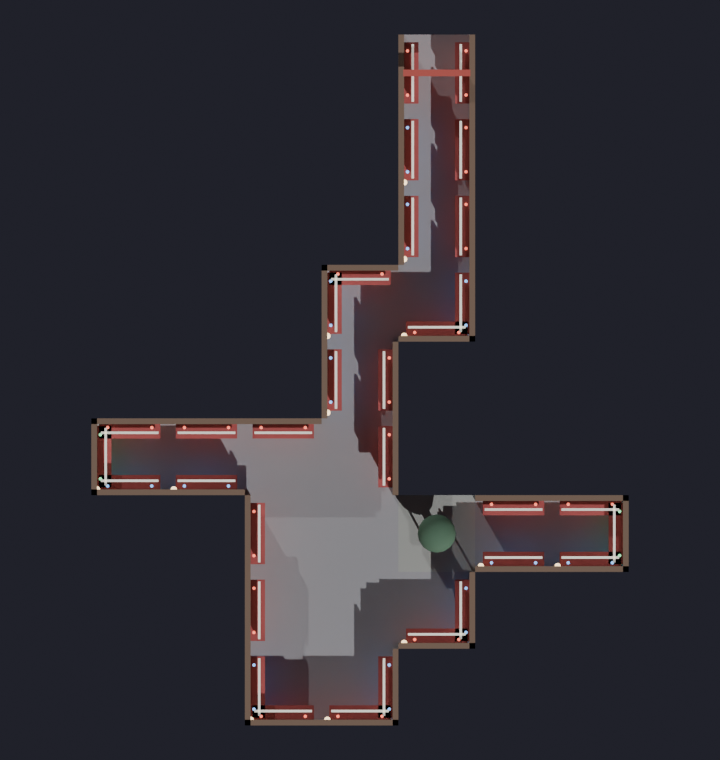
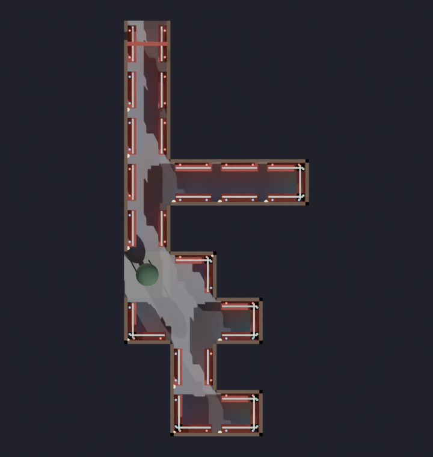
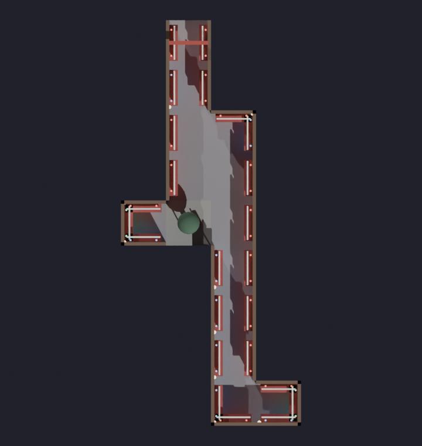
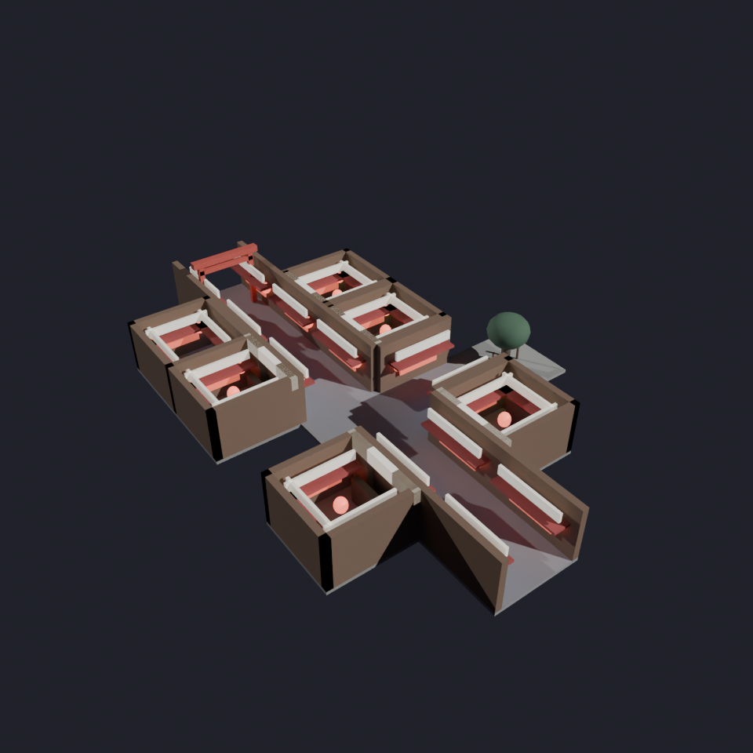
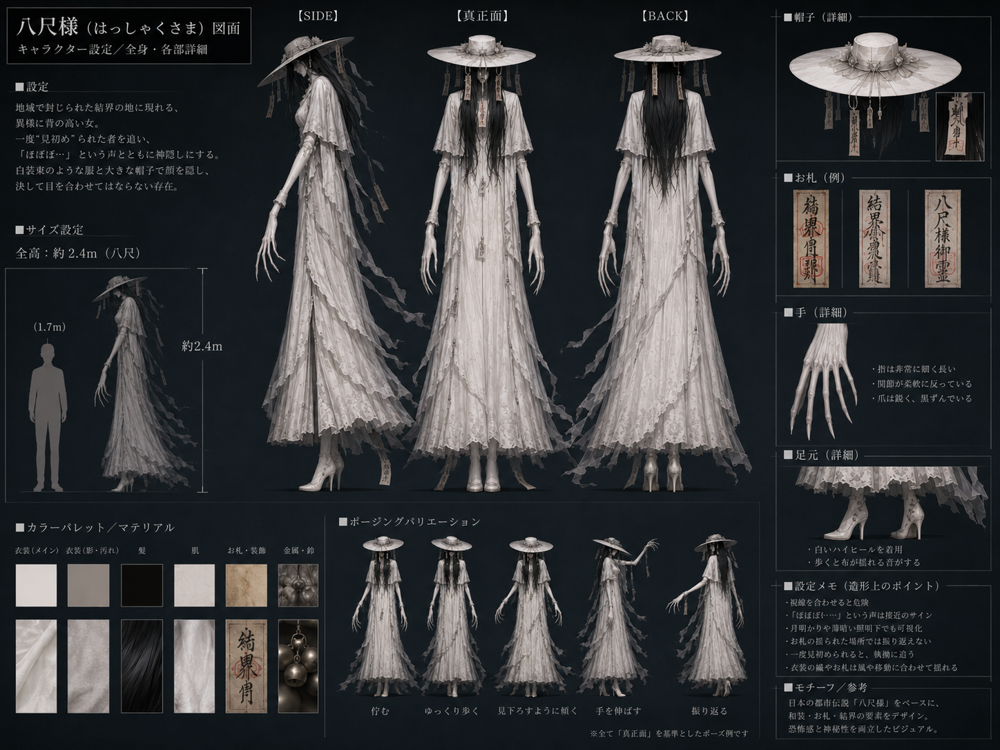

夜の商店街に神隠し。遊ぶたびに姿を変える商店街で、お札の色に紛れて八尺様から隠れ、奥の神社を目指して脱出せよ。
都市伝説好きの主人公は、噂の「八咫商店街」を訪れる。
——「一度入ると、二度と同じ景色を見ることはない。」
笑いながら鳥居をくぐる。しかし振り返ると、入ってきた鳥居は消えていた。
出口がない。携帯も繋がらない。静まり返る商店街。
そして遠くから——「ぽ・・・ぽ・・・ぽ・・・」
八尺様の足音。神隠しが始まる。
＝ 説明書なしで分かる、直感的なコアループ。
プレイヤーはいずれかの色になる。同じ色の場所（赤なら 赤提灯・赤暖簾・赤看板・赤自販機…）では八尺様から見つからない。
しかしお札を拾うと色が変わる——安全だった場所が、突然 危険になる。
閉じ込められるのは、現実の商店街の“裏側”＝並行世界。色が抜け、寒色の霧が立ち、霊気が漂う——八尺様が支配する世界。
裏世界ではお札の色に体が染まる。同じ色に紛れると結界に溶けて八尺様に見えない。色がちがえば、ひと目で見つかる。



道路・店舗・アイテム・お札・隠れ場所・イベント・八尺様の行動——すべてが毎回変わる。（実機モジュール生成のプロト）
迷い込んだ人の恐怖を読み取り、姿を変える。
商店街そのものが、プレイヤーを閉じ込めようとする。

進むほど難度が上がり、色数・イベント・八尺様が強化される。
各エリアも、毎回ちがう構成で生成される。
裏世界の主。全高約2.4m（八尺）の異形。長い黒髪で顔が隠れ、指は異様に長い。白いレースの衣装とつば広帽。
最初からゆっくり徘徊。見た瞬間、同じ色に紛れていれば見失う／色がちがえば発見して追う。声は「ぽ…ぽ…」。進むほど少し速くなる。
▶ 動く3Dデモ： toshiokikuchi777-sudo.github.io/yata-shotengai-assets/hasshaku.html

リグ＋モーション実装済み。このままRobloxへ流用できる状態です。 ▶ Web版はその場で回転＆再生（ドラッグで回り込み・ホイールでズーム）。
動くデモ： toshiokikuchi777-sudo.github.io/yata-shotengai-assets/hasshaku.html
毎回すべてが変わる商店街で、神社だけは変わらない。
ここには神隠しの真実がある。
御札を集め、結界を完成させ、八尺様を封印する。
お札＝色に紛れて隠れる／御朱印＝色に関係なく一瞬隠れる切り札。※強すぎないよう短く・1回使い切りで両立。
怖さより先に「ルールの見える化」。低年齢層は文字を読まない——光・色・音・アイコンで伝える。
封印は成功した。静寂が戻る。鳥居を抜ける。
外へ出られた——そう思った瞬間、背後から「ぽ・・・」
振り返ると、そこにはまた違う商店街。
本当に、脱出できたのだろうか。
「色変わった！」「後ろー！」「やばい！」「逃げてー！」 ——叫べる和ホラー。
怖さより先に「ルールの見える化」。低年齢層は文字を読まない——光・色・音・アイコンで伝える。
① 世界観・コア設計の確定 → ② 街割り（色テーマの迷路）の確定 → ③ プロトタイプ（色マッチ隠れの核） → ④ 八尺様AI・毎回ランダム生成 → ⑤ 裏世界の演出（霧・霊気） → ⑥ テスト・公開
「日本の夜の商店街に神隠し。お札の色に紛れて八尺様から隠れ、鳥居をくぐって逃げ帰る。」
アップデートで 新しい商店街 / 新しい妖怪 / 新しいイベント / 新しいストーリー を追加。
長く遊べるライブサービス型タイトルとして成長させる。
「この商店街には、同じ景色が二度と存在しない。」
遊ぶたびに姿を変える商店街。その奥で待つのは、八尺様か、神隠しの真実か。
あなたは、無事に脱出できますか？